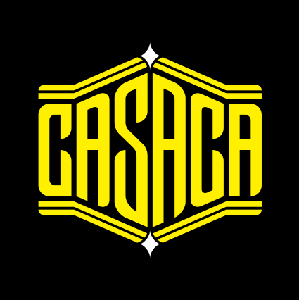
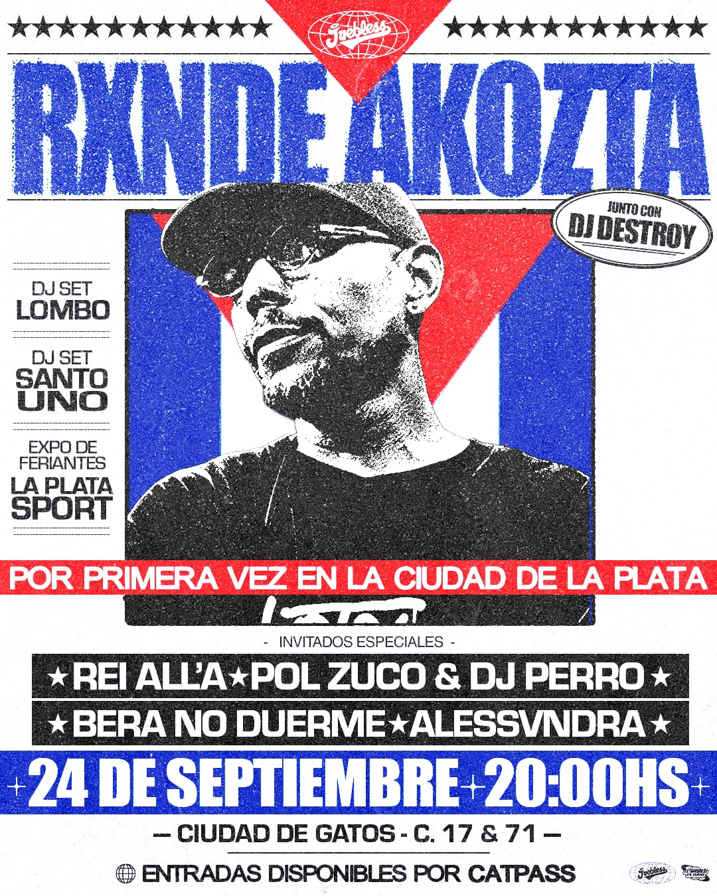

Formación
Talleres de Hip Hop
Formación en las disciplinas de nuestra cultura.
- Rap y escritura
- DJ
- Breakdance
- Graffiti

Después de cinco años y 50 ediciones de Juebless, abrimos nuestro propio centro cultural en La Plata. Buscamos marcas, empresas y emprendimientos que quieran sumarse a esta nueva etapa y acompañar el crecimiento del espacio.
Hace cinco años empezamos Juebless en La Plata con una idea: generar espacios para que la cultura Hip Hop pudiera encontrarse, expresarse y crecer.
El primer encuentro en La Plata, con una idea: que la cultura Hip Hop tuviera dónde encontrarse.
Edición tras edición, dimos lugar a artistas emergentes y proyectos independientes.
Festivales gratuitos al aire libre y actividades con instituciones como el club de fútbol infantil Julián Aguirre.
Este último año compartimos escenario con referentes y leyendas del Hip Hop latinoamericano.
Un recorrido de 50 encuentros que se puede ver en los 50 flyers de nuestro Instagram. Lo que sigue es Casaca.
Dos fechas de este año que muestran el nivel de producción y el público que convoca cada encuentro.

RealizadaPor primera vez en La Plata. Cinco invitados especiales, dos DJ sets y expo de feriantes con La Plata Sport.
 Próxima fecha
Próxima fecha
Con apertura de Franqui Quiroga. Producción junto a Lunfardo Producciones y Ciudad de Gatos.
Llevamos la cultura a otros espacios y a otras personas, con encuentros abiertos y sin entrada.
Desarrollamos actividades junto al club de fútbol infantil Julián Aguirre, generando oportunidades y fortaleciendo los vínculos del barrio.
Un trabajo independiente, sostenido con esfuerzo y compromiso, que ayudó a darle visibilidad, continuidad y nuevos espacios al Hip Hop en La Plata.
Casaca es nuestro propio centro cultural: un lugar de referencia permanente para el Hip Hop, abierto también a otras expresiones artísticas. Un espacio activo toda la semana, donde la cultura se aprende, se practica, se produce y se comparte.
Formación en las disciplinas de nuestra cultura.
Para que artistas y bandas preparen sus shows en vivo, trabajen su sonido y crezcan técnicamente.
Punto de encuentro para marcas textiles, diseñadores y emprendimientos de moda urbana e identidad Hip Hop.
Lugar de referencia para artistas, DJs, bailarines, escritores, productores, grafiteros y emprendedores, de todas las generaciones.
Tu marca no aparece en una sola noche: está en una casa que funciona toda la semana, con talleres, ensayos, ferias y eventos.
Cinco años y 50 ediciones de trabajo sostenido con artistas, público, feriantes y organizaciones de La Plata.
Te asociás a la formación de jóvenes, a la escena independiente y a artistas referentes del Hip Hop latinoamericano.
Cada fecha y cada taller generan fotos, videos y flyers donde tu marca acompaña de forma natural.
Tres niveles de acompañamiento como punto de partida. Los armamos a medida de cada marca, empresa o emprendimiento.
Para la marca que quiere ser parte de la casa.
Para acompañar la formación.
Para emprendimientos que quieren estar cerca.
Equipamiento de sonido, materiales para los talleres (aerosoles, papel, vinilos), bebidas, indumentaria o servicios. Todo suma para poner en marcha la casa.
Queremos que Casaca sea una casa donde todos tengan un lugar. Hablemos y armamos juntos la forma de sumarte.